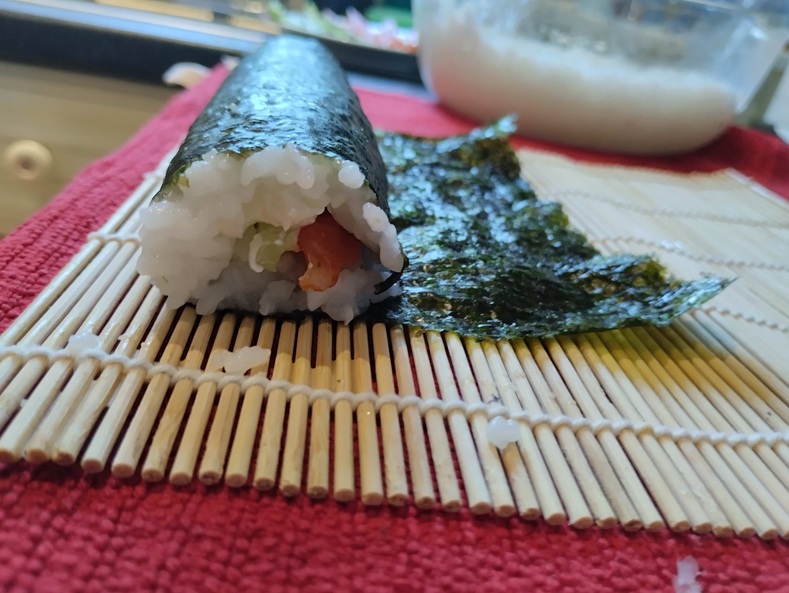

Sushi recipe
Specific ingredients and supplies:
- Rice for sushi
- Nori seaweed sheets
- Rice vinegar
- A bamboo stick for forming rolls
All this can be bought at Morrisons!
Common ingredients:
- Salted salmon/trout (you can use any other seafood you like)
- Soft cheese (any will do)
- Cucumber or avocado, or maybe both at the same time
How I salt the fish myself:
- Salmon fillet 300-400g
- Coarsely ground salt 4 tablespoons (it works best, but you can also use regular)
- Black pepper, a couple of peas and ground - to taste
- Sugar - 1 teaspoon
- You can also add a couple of bay leaves and 1 teaspoon of dry mustard
Roll the fish fillet in this mixture and put it in the refrigerator.
Usually the fish is ready the next day, you can keep it longer and it will be saltier.
We are cooking rice!
Wash the rice well and leave it in water for 15-20 minutes. We change the water, we need 500 ml of water for 250 g of rice. We put it on the stove and as soon as the water boils, we reduce the heat to the minimum temperature and cook with the lid closed for 15 minutes (do not stir!)
While the rice is cooking, we make the dressing for it.
Mix 5 tablespoons of rice vinegar with 1 tablespoon of sugar and 1/2 teaspoon of salt. Salt and sugar must dissolve completely. Transfer the rice to a clean container, add the dressing, mix thoroughly, cover with a towel and leave for a couple of hours to cool.
...and so we have everything ready!
1. Cut the fish fillet and cucumber/avocado into strips
2. Place a sheet of nori on the mat with the smooth side down!

3. Spread rice up to 1 cm thick on a sheet of nori
(rough side), fill the area slightly more than half of the sheet
4. Put fish,cheese and vegetables on rice
5. We wrap our roll to the line where the rice ends
6. We pull our roll to the beginning of the mat.
7. We pull our roll to the beginning of the mat. Wet the remaining edge of the nori sheet with wet hands
(not too much) and twist our roll to the end
8. We cut our roll with a sharp knife into pieces of the thickness we need;)